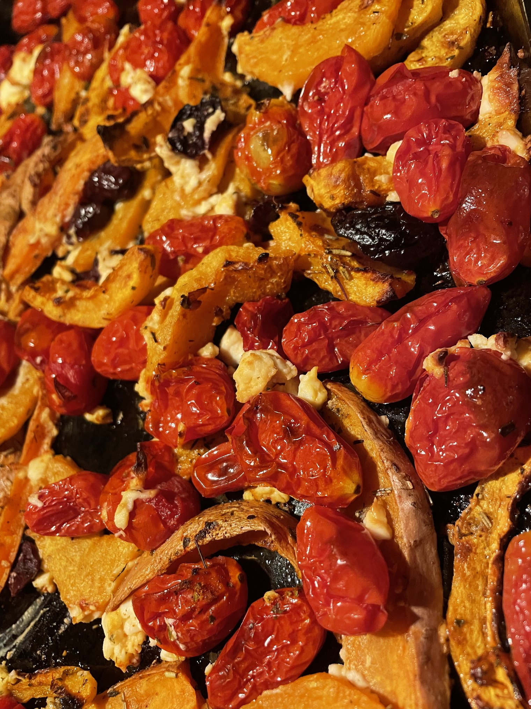
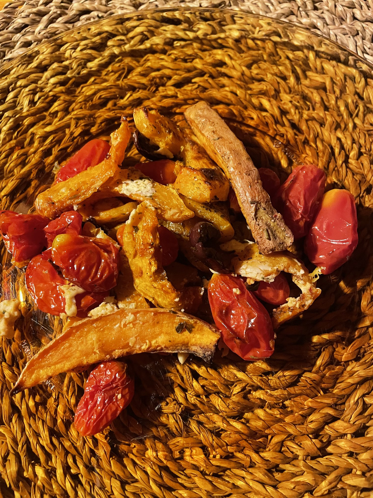

Boniato, calabaza, cherrys, olivas negras y feta al horno
Ingredientes
2×
- 1 boniato
- 0.25 de calabaza
- 250 g de tomates cherry
- un puñado de olivas negras
- aceite de oliva
- sal
- romero o tomillo
- 100 g de feta

Preparación
Paso 1
Cortar 1 boniato y 0.25 de calabaza en gajos, con la piel.
Paso 2
Ponerlos en una bandeja con 250 g de tomates cherry, un puñado de olivas negras, aceite de oliva, sal y romero o tomillo.
Paso 3
Hornear 30min a 200ºC. Añadir 100 g de feta desmenuzado y hornear 10min más, hasta que los cherrys estén reventados y la feta dorada.
Resumen
1 boniato
0.25 de calabaza
Cortar
250 g de tomates cherry
un puñado de olivas negras
aceite de oliva
sal
romero o tomillo
100 g de feta
Hornear 200ºC hornear
